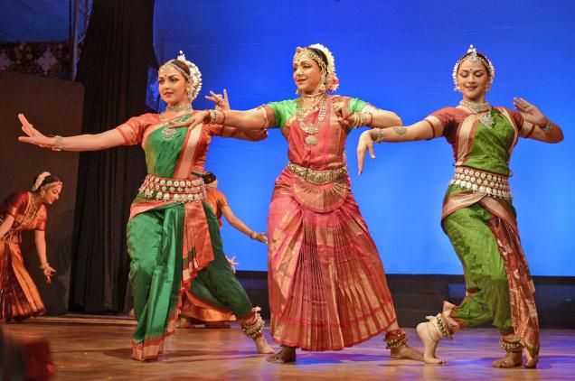
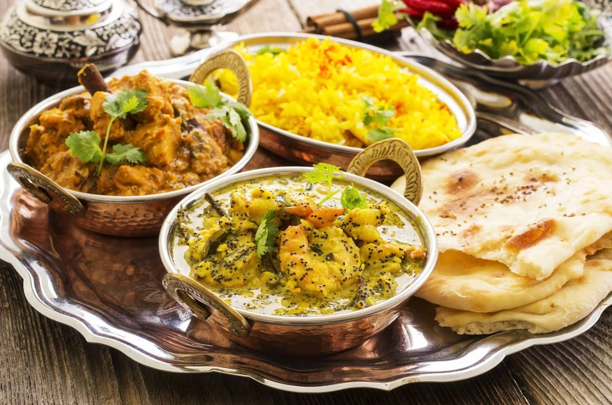
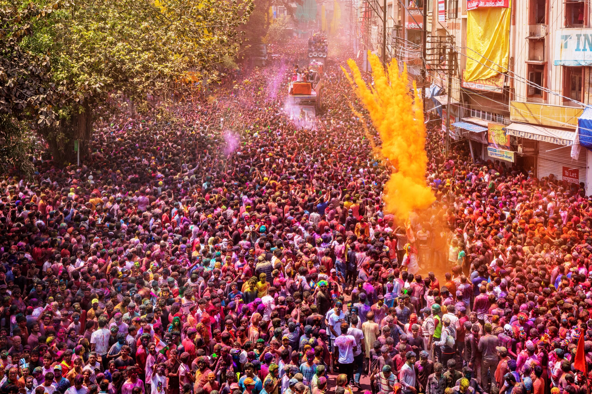

History of Madhya Pradesh
Madhya Pradesh, located in central India, is often referred to as the "Heart of India" due to its geographical location. It has a rich historical heritage that spans various dynasties and empires. The region has seen the rule of the Mauryas, Guptas, Paramaras, and Mughals, among others.
The ancient city of Ujjain was a prominent center of learning and culture during the Maurya and Gupta periods. It is also associated with the legendary King Vikramaditya. The medieval period saw the rise of the Rajput dynasties, such as the Paramaras of Malwa, who contributed significantly to the architectural and cultural landscape of the region.
During the Mughal era, Madhya Pradesh was an important part of the empire, with cities like Gwalior and Mandu serving as significant centers. The region witnessed the influence of various cultures, which is evident in its diverse architectural styles and cultural practices.
In the modern era, Madhya Pradesh played a crucial role in India's struggle for independence. The state is known for its contributions to social and political movements and has produced several notable leaders who have shaped the nation's history.
Today, Madhya Pradesh is celebrated for its historical monuments, temples, and forts that reflect its glorious past. The state's rich history is a testament to its resilience and cultural diversity, making it a fascinating destination for history enthusiasts and travelers alike.
Cultural Heritage
Madhya Pradesh's culture is a vibrant blend of traditional music, folk dances like Gaur and Matki, colorful attire, and unique art forms such as Gond painting and Chanderi sarees. The state is also renowned for its festivals like Diwali, Holi, and Navratri.
- Music and Dance: The folk music of Madhya Pradesh is characterized by its soulful melodies and rhythmic beats. Instruments like the dhol, mandal, and flute are commonly used. Dances like Gaur, performed by the tribal communities, and Matki, known for its graceful movements, are integral parts of the state's cultural heritage. 
- Art and Craft: Madhya Pradesh excels in intricate handicrafts such as Gond painting, which is a tribal art form depicting nature and mythology. Chanderi sarees, known for their fine silk and exquisite designs, are a symbol of the state's craftsmanship. Other notable crafts include Maheshwari sarees, terracotta sculptures, and brassware.
- Cuisine: Savor dishes like poha, bhutte ka kees, and jalebi, showcasing a rich culinary tradition. Madhya Pradesh's cuisine is known for its diverse flavors, with a mix of vegetarian and non-vegetarian dishes. Street food is a significant part of the culinary culture, with dishes like poha and jalebi being immensely popular. The use of local spices and traditional cooking methods results in a delightful culinary experience. 
- Festivals: Festivals like Diwali, Holi, Navratri, and Makar Sankranti are celebrated with great enthusiasm. Navratri, in particular, is marked by traditional dances like Garba and Dandiya, reflecting the state's deep-rooted cultural and religious traditions. 

Madhya Pradesh's cultural heritage is a living tradition that continues to thrive. The state's commitment to preserving and promoting its culture is evident in the numerous cultural festivals, fairs, and events held throughout the year. These events provide a platform for showcasing traditional art forms, music, dance, and cuisine, attracting tourists and cultural enthusiasts from around the globe.
Tourist Attractions

Khajuraho Temples: Located in Chhatarpur, the Khajuraho Temples are a UNESCO World Heritage Site known for their stunning erotic sculptures and intricate carvings. The temples, built between the 9th and 11th centuries, are masterpieces of Indian architecture and attract tourists from around the world.

Sanchi Stupa: Located in Sanchi, the Sanchi Stupa is a UNESCO World Heritage Site and one of the oldest stone structures in India. It is an important Buddhist monument built by Emperor Ashoka in the 3rd century BCE. The stupa is renowned for its exquisite gateways and intricate carvings depicting the life of Buddha.

Bhimbetka Rock Shelters: Located in Raisen, the Bhimbetka Rock Shelters are a UNESCO World Heritage Site known for their prehistoric cave paintings. The rock shelters provide a fascinating glimpse into the lives of early humans and are an important archaeological site.

Gwalior Fort: Located in Gwalior, the Gwalior Fort is an imposing hill fort known for its architectural grandeur and historical significance. The fort, which has been described as "the pearl amongst fortresses in India," offers panoramic views of the city and houses several important monuments.

Pachmarhi: A popular hill station known for its scenic beauty, caves, and waterfalls. Pachmarhi, also known as "Satpura ki Rani," is a favorite getaway for nature lovers and adventure enthusiasts. The hill station is famous for its lush green valleys, serene lakes, and historic sites like the Pandav Caves.